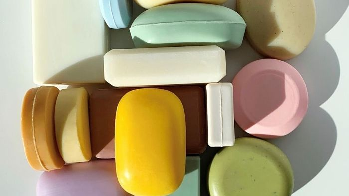
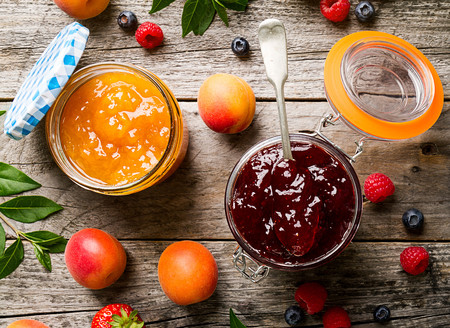
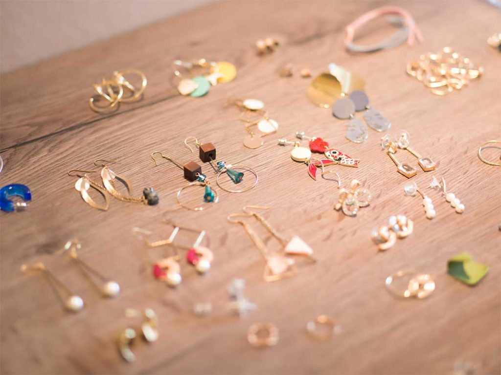

Letra J
Introduccion: En esta pagina encontraremos las palabras más comunes con la letra J
- Jirafa: es un mamífero, notable por ser el animal terrestre más alto del mundo.
- Jabón: es un producto soluble en agua, que se usa para lavar y limpiar objetos, además de para la higiene personal 
- Jalea: Conserva transparente, hecha del zumo de algunas frutas. 
- Jeringa: Es un tubo con un émbolo dentro que sirve para aspirar o inyectar líquidos.
- Joya: Adorno de oro, plata o platino, con perlas o piedras preciosas o sin ellas. 